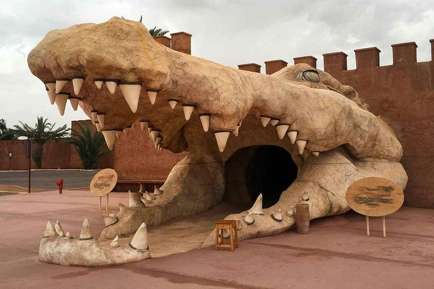
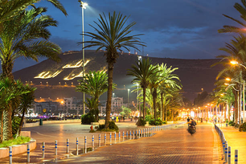

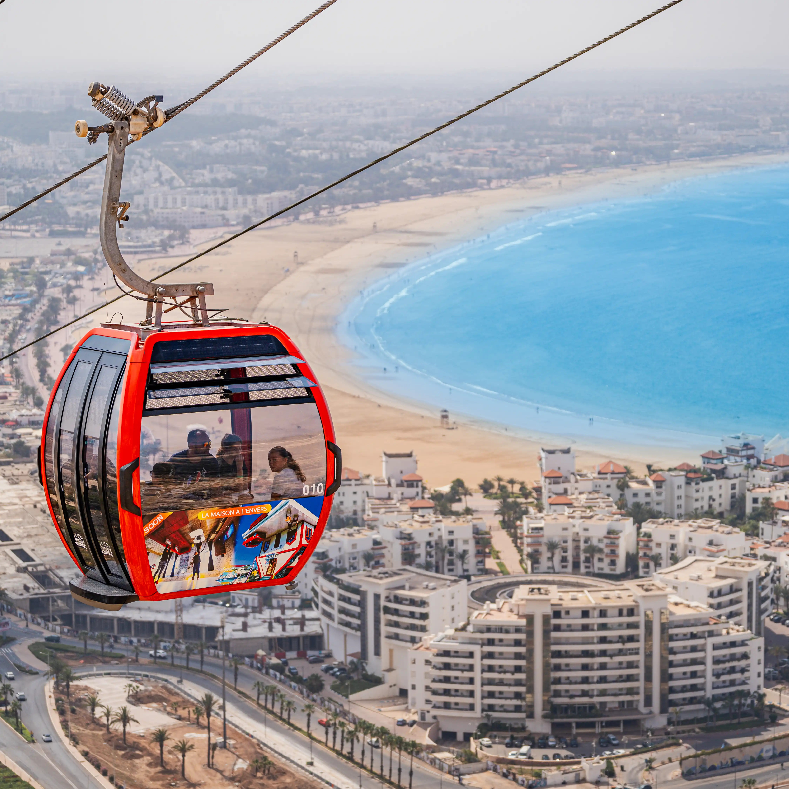
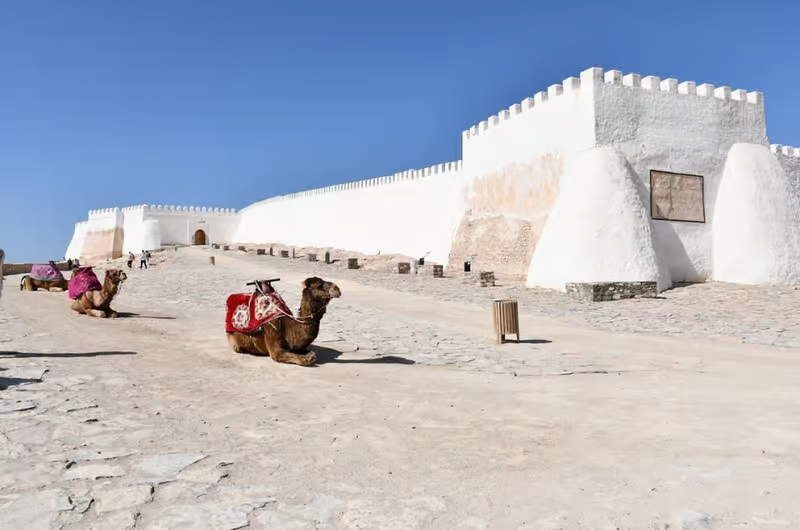
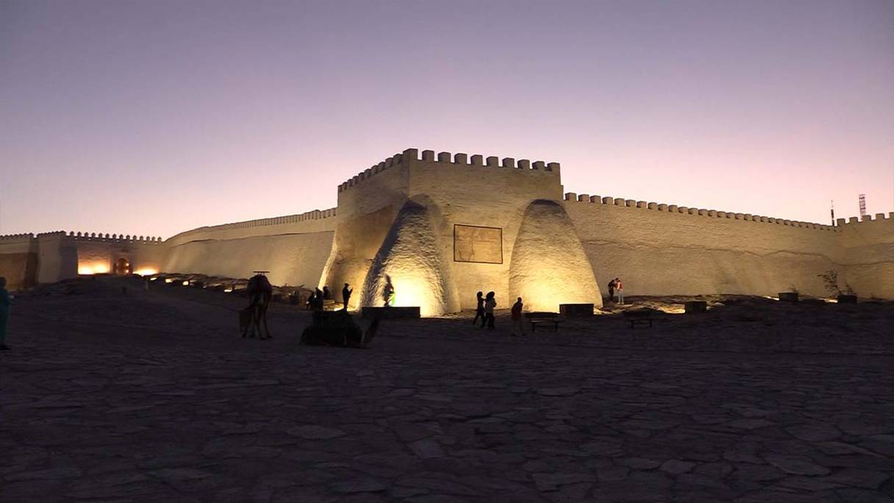
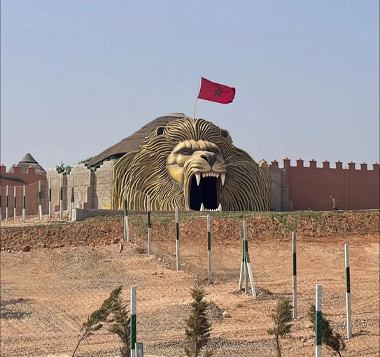

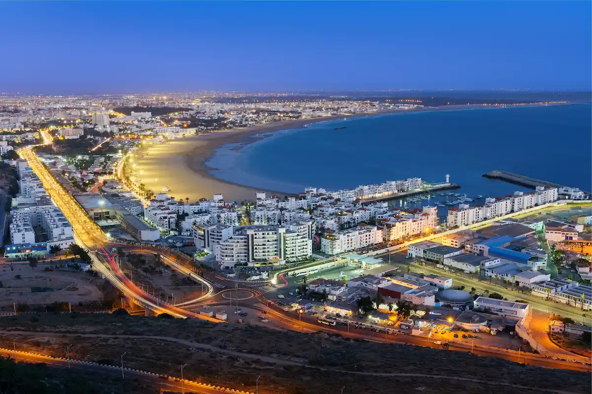
The International Conference on Intelligent Systems, Technologies and Applications
Hybrid Conference (In-person and Online)
May 03–04, 2027 | Agadir, Morocco
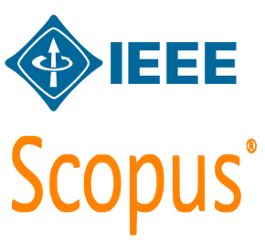
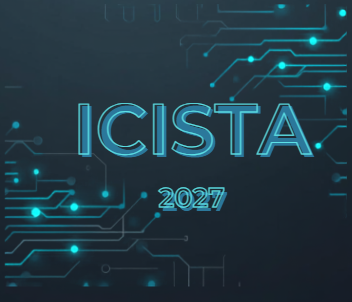







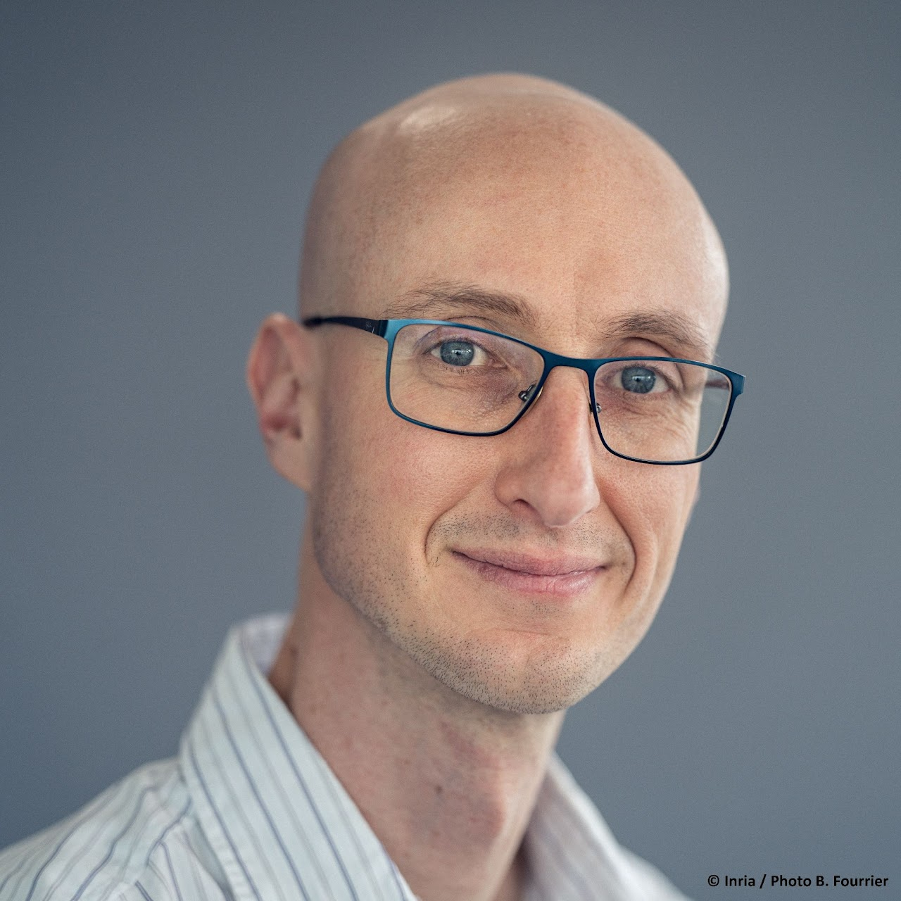
Fabien LOTTE obtained a M.Sc., a M.Eng. and a PhD degree in computer sciences, all from the National Institute of Applied Sciences (INSA) Rennes, France, in 2005 (M.Sc., M.Eng.) and 2008 (PhD). His PhD Thesis received both the PhD Thesis award 2009 from AFRIF (French Association for Pattern Recognition) and the PhD Thesis award 2009 accessit (2nd prize) from ASTI (French Association for Information Sciences and Technologies).
In 2009 and 2010, he was a research fellow at the Institute for Infocomm Research (I2R) in Singapore, working in the Brain-Computer Interface Laboratory. From January 2011 to September 2019, he was a Research Scientist (with tenure) at Inria Bordeaux Sud-Ouest, France, in team Potioc (http://team.inria.fr/potioc/). He obtained an Habilitation (HDR) in Computer Science from the University of Bordeaux in September 2016.
Between October 2016 and January 2018, he spent 1-year as a visiting scientist at RIKEN Brain Science Institute, Japan, in Cichocki's laboratory for advanced brain signal processing. Since October 2019, he is a Research Director (DR2) at Inria Bordeaux Sud-Ouest, France, still in team Potioc.
His research interests include Brain-Computer Interfaces (BCI), human-computer interaction, pattern recognition and brain signal processing. He is part of the editorial boards of the journals Brain-Computer Interfaces (since 2016), Journal of Neural Engineering (since 2016) and IEEE Transactions on Biomedical Engineering (since 2021). He is also co-specialty chief editor of Frontiers in Neuroergonomics: Neurotechnology and System Neuroergonomics. He co-edited the books "Brain-Computer Interfaces 1: foundations and methods" and "Brain-Computer Interfaces 2: technology and applications", published both in French and in English in 2016, as well as the book "Brain-Computer Interfaces Handbook: Technological and Theoretical Advance" published in 2018. In 2016, he was the recipient of an ERC Starting Grant (project BrainConquest) to develop his research on BCI.
Dr. Kavita is an accomplished academician and researcher in the field of Computer Science and Engineering, with over 14 years of rich experience in teaching, research, and academic administration. She is currently serving as a Professor in the Department of Computer Science and Engineering at Rayat Bahra University, Mohali. She has published over 200+ research papers in reputed journals such as IEEE Transactions (Industrial Informatics, Intelligent Transportation Systems, Network Science and Engineering), IEEE Internet of Things, ACM Transactions, Neural Computing and Applications (Springer), Scientific Reports (Nature), Elsevier, and MDPI. She serves as reviewer and editorial board member for several top-cited journals, has chaired sessions at international conferences, and guided 5 Ph.D. scholars along with multiple M.Tech and undergraduate projects. With 6700+ citations and an h-index of 46 and i10-index of 110, her work is globally recognized. She has 15+ patents and design registrations. She has authored various books, completed consultancy projects, and actively contributed to curriculum development and quality assurance. Dr. Kavita holds memberships in IEEE, ACM, and IAENG, and has visited and collaborated with universities in Europe, including VSB Technical University (Czech Republic) and University of Milan (Italy). Her research interests include WSN, Network Security, IoT, Optimization, ML, AI, and DL. She has visited several countries for research collaborations, lab establishment, and academic exchange initiatives..
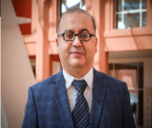
Ali Idri is a Full Professor at the Computer Science and Systems Analysis School (ENSIAS), Mohammed V University in Rabat since September 1994. He was also an Affiliated Professor at Mohammed VI Polytechnic University during the period March 2019- May 2025. He holds a Ph.D. in Computer and Cognitive Sciences from the University of Québec at Montréal (2003), and a Doctorate 3rd cycle in Computer Science from the University of Mohammed V, Rabat (1997).
Throughout his career, Ali has held administrative and research roles, including as the Head of the department of Web and Mobile Engineering at ENSIAS (2014-2019), and the head of the Software Project Management research team since 2010. Ali was an Associate Professor in the Software Engineering and Information Technology Department at Ecole de Technologie Supérieure (ETS) de Montréal, Quebec, Canada for the period 2013 – 2017. Ali is an Expert evaluator at the National Center of Scientific Research (CNRST) in Morocco since 2017. He was the principal investigator of several leading national and international projects on the use of artificial intelligence and information technologies in health. Ali has published more than 300 papers in well-known journals and conferences and received recognition for his contributions to the field: (1) Among the top 2% researchers around the world in all scientific fields according to the ranking of Stanford University since 2021. (2) Among the Top-Ten researchers around the world in doing Systematic Mapping Studies in Software Engineering. (3) Among the Top-Ten authors in terms of frequency of publications in Software Engineering for the period 2014-2016. (4) 3rd position of the top-ten well- recognized researchers in Software Effort Estimation, 2017. (5) the Best Moroccan Researcher Award in “Computer Science” for the period 2016-2020 during the second edition of “Research Excellence Awards” ceremony organized by Web of Science and the National Centre for Scientific and Technical Research (CNRST) on June 29, 2021. And (6) the best Moroccan scientists in the category Engineering of the AD Scientific ranking since 2021. He is an Associate Editor of two international journals: BMC Medical Informatics and Decision Making, and Scientific African. He published more than 300 articles in well-recognized journals and conferences.
Further keynote speakers are under confirmation and will be added to the program in due course.
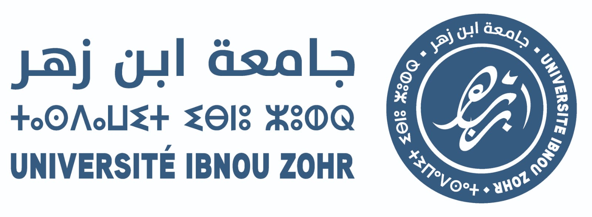
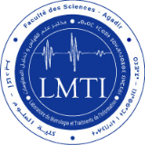
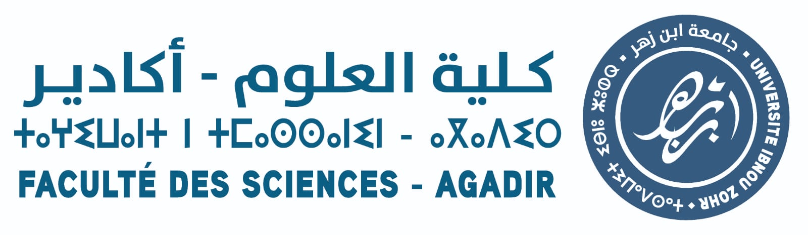
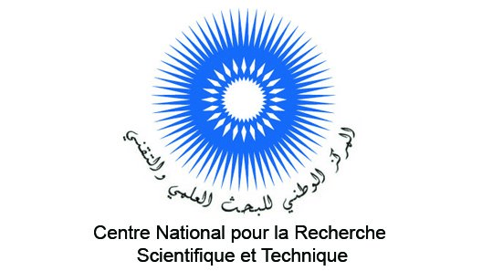
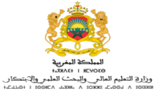

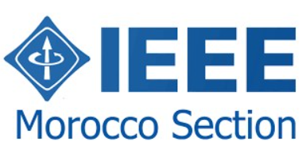